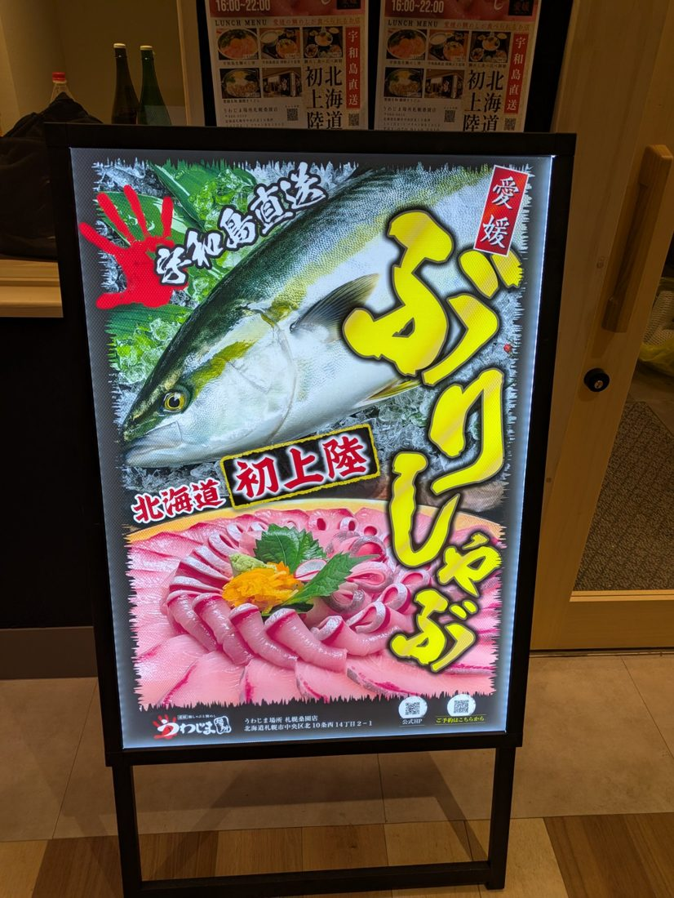
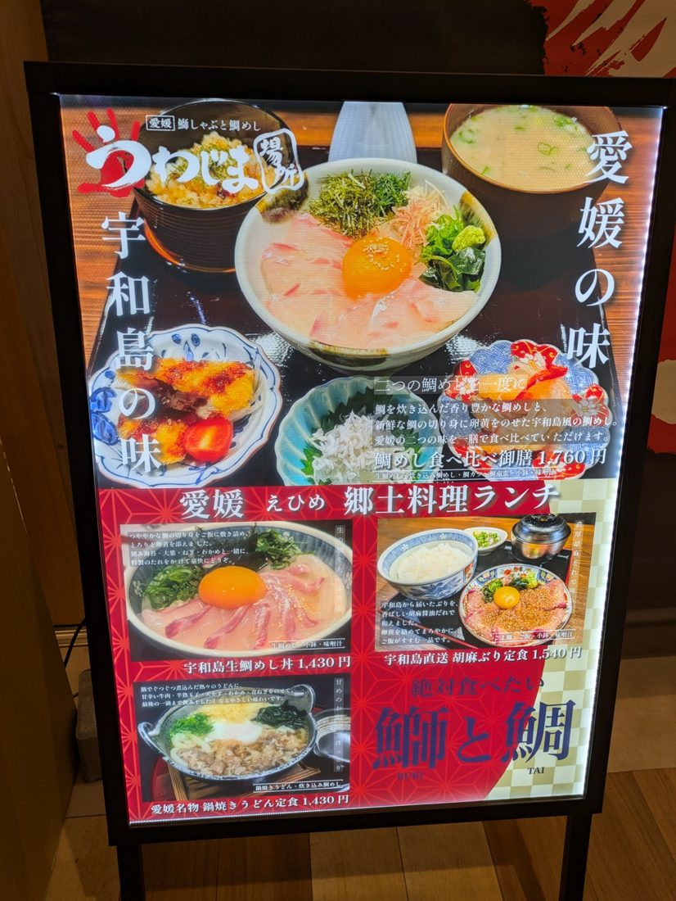
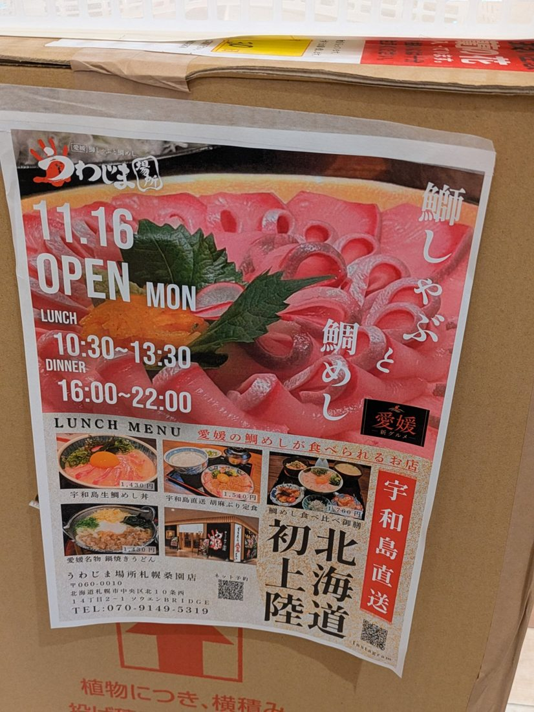

北海道初上陸！うわじま場所 札幌桑園店、11月16日オープン

お知らせです‼️ 間もなくオープン‼️
愛媛・宇和島直送の魚が自慢の「うわじま場所」が、ついに北海道初上陸。札幌・桑園に **2026年11月16日（月）** オープンします。ご縁あって、私もこのお店の厨房に立たせていただくことになりました。
看板メニューは「鰤しゃぶ」と「鯛めし」。宇和島から直送される鰤と鯛を、愛媛の味で楽しめるお店です。
愛媛の郷土料理ランチ

お店の情報
| 店名 | 鰤しゃぶと鯛めし うわじま場所 札幌桑園店 |
|---|---|
| オープン | 2026年11月16日（月） |
| 営業時間 | ランチ 10:30〜13:30／ディナー 16:00〜22:00 |
| 住所 | 〒060-0010 北海道札幌市中央区北10条西14丁目2-1 ソウエンBRIDGE |
| 電話 | 070-9149-5319 |

桑園にお越しの際は、ぜひお立ち寄りください。北海道の皆さんに、宇和島の鰤と鯛の美味しさが届きますように。
← トップページへ戻る